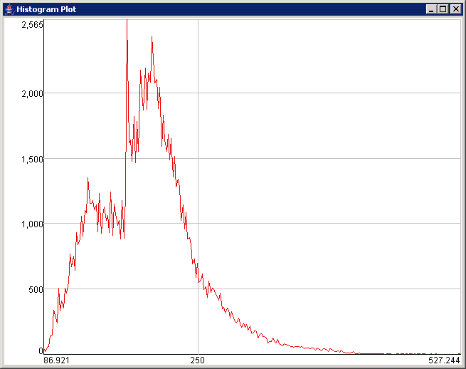

The class Histogram provides a tool for computing histograms of two-dimensional multivariate (multi-band) images.
Description: A histogram is computed by clicking the button Hist. It represents the frequency of occurrence for a range of image band intensities. The range of image intensities is also called a histogram bin. The current bins are always defined with respect to the input data type, such that there are always 256 bins. While the histogram of BYTE types is defined with bin width equal to one, the histogram of SHORT data types has bin width equal to 256. Histograms of other data types, for example, INT or FLOAT, use bin width computed from minimum and maximum data values for a fixed number of bins equal to 256.
Run: The histogram output can be viewed by selecting the Image Histogram in the Menu. The plot colors are assigned to each histogram in the following order:
1st band - red, 2nd band - green, 3rd band - blue, 4th band - yellow, 5th band - purple, 6th band - cyan, 7th band - mix, other bands - black.
 Example single band imageIt is possible to save histogram plots by going to the menu of the plot and selecting "Save" or "Save As Image". The option "Save" outputs numerical values of histograms into a text file. The selection "Save As Image" saves the plot as an image in the tif file format.
The button Stats computes basic statistics of each histogram. By clicking the button ShowStats, all values will be displayed in the text window. The statistics include for each band the following parameters:
mean, standard deviation, median, skew, kurtosis, mode (maximum frequency in the histogram), contrast (standard deviation normalized by number of bins in percents), count (number of non-empty histogram bins), minHistBin (index of the smallest occupied bin), maxHistBin (index of the largest occupied bin), numSamples (number of samples used for the histogram).
In addition, this tool can compute histogram over a masked image. The mask has to be a byte array with a byte value equal to -1 for a valid image pixel. The file format of the image mask should be tif with one byte per pixel.
Release notes:
The current release does not save out any text of the histogram plots in the "Save As Image" mode.